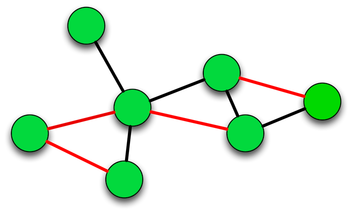

Generals propose a time to attack.
Generals must communicate by sending messengers.
Generals can send many messengers.
Generals must come to a consensus on the time to attack.
"I will attack on Day 4 at 0600, will you join me?"
Attach a sealed response to the original message.
Send out copies of the newly combined message to the other generals and ask them to do the same.
The objective is to have them all agreeing to the same time by adding all of their seals onto the same message chain.
Many messengers in transit at any one time.
Each general could receive multiple messengers each with different attack times.
Some of the generals will agree to more than one attack time.
It quickly degenerates into a completely untrustworthy tangle of conflicting messages and attack times.
How do you establish truth in a distributed network?
Public ledger containing all transactions (blockchain).
A transaction: send x amount from A->B.
Transactions are processed by a peer-to-peer network.
Transactions can arrive at different times at different nodes.
Timestamps can be faked.
Bad actors can (attempt to) double spend.
How do you agree on the order of the transactions?
Maintaining the blockchain is called mining.
Miners process payments by verifying each transaction as valid and adding it to the block chain.
Gather a set of transactions into a block.
Apply a cryptographic hash function that (eventually) results in a hash of a certain difficulty.
Publish block hash to the network".
This is known as "Proof-of-Work".
sha256("But here's my number so call me maybe")
c7331b414067c5101f66657909eb56eb5d50e4b5883c35ca5f08bfb2d3798fd6
Notice how the hash drastically changes due to a one character change:
sha256("But here's my number so call me maybe.")
dc15744ef69e4a81e7dc0f04921b471101389609e729624438c3b15afb4d09a4
if sha256(sha256(prevHash + transactionsHash + random number)) < target
Bitcoin has a target hash that looks something like this:
00000000000000001e8d6829a8a21adc5d38d0a473b144b6765798e61f98bd1dOnly if this is true can a miner publish to the network.
Guessing the right random number takes time.
Miners receive one block soultion at a time (usually).
Simple to validate and agree on the transaction order.
Proof-of-Work adds a cost to the sending of a messenger.
Slows down the sending of messengers.
Effort is put into propagating the TRUTH.